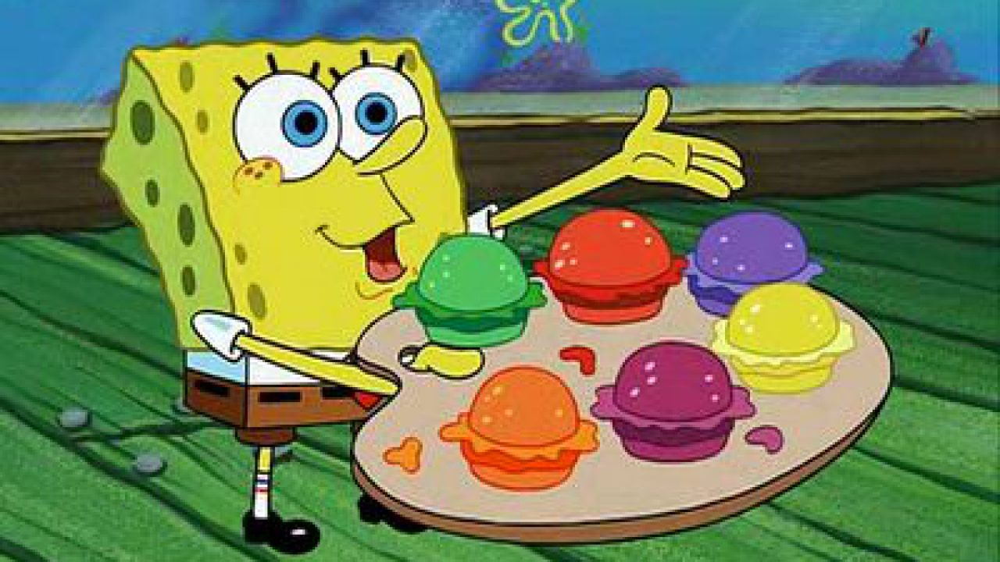

Para empezar, una hamburguesa es comida y tiene nutrientes, lo que tenemos que ver es qué tipo de hamburguesa
comemos, con qué frecuencia y con qué lo acompañamos. Además, es una fuente de proteínas, genera un aumento de energía con el hierro,
glóbulos rojos con B12 y vitamina
♦-----♦-----♦-----♦-----♦----♦----♦----♦----♦----♦----♦----♦----♦----♦----♦----♦----♦----♦

Super Veloces
Hamburguesas de Colores
purebe algo nuevo y nutritivo
Dos variedades de hamburguesas que destacan por su pan de color azul, el mismo que caracteriza al concept store y que corresponde al color Pantone 293C, un guiño al logotipo de Colette conformado por 2 círculos de color azul. "Dos hamburguesas para despedirse de una de las tiendas más inspiradoras de la historia",
escribía Blend el pasado septiembre en el momento del lanzamiento de este suculento bocado..